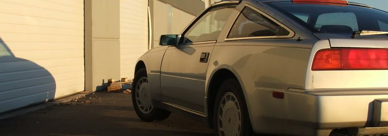

-
You're either very inexperienced, or very naive to make a claim like that. n00b posts and replies and general off topic banter and chat are a fact of life.Chris86NA2T wrote:
Evil Z31, this type of behavior does not go on on every forum. it occurs in honda forums. my friends honda forum even has a "bullshit" forum where people go to type giberish in order to increase their post count. as far as my complaint regarding useless posts… if i post information on a project i completed or something i am working on, my intention is not to get patted on the back by some internet forum people. my intention is to share the progress i made and look for input from others. basically i am opening a conversation.. now im not suggesting that praise for good work should not be allowed, im suggesting that someone who replies to a post with "wow" or "nice job" is not contributing anything. all it does is make the post longer and difficult to read. many times i find an interesting post that has sparked an interesting conversation between two people. the only problem is, between their replies are countless single work posts. i come here to learn about how to make my car better and to share what ive learned with others.545 RWHP & 540 RWTQOriginally posted by Andrew84zx
tell her your car is so fast it will make her panties fly off

-
[quote]FlawleZ wrote:and part every forum in the internetOriginally posted by Chris86NA2T -
One way that I feel the forum needs to be cleaned up, is in post moving. There are so many posts that I see in the Performance forums which actually belong in the Basic or Repair forums. From what I remember, this used to be moderated much tighter a few years back when the forum started.
It's very frustrating to me."produce first.talk second." -
Mike and Chris I agree with your posts The performance forums especially need to be more heavily moderated, every now and then I go on a delete & move rampage but I dont have the time to keep up with all the shit posted in there anymore.2005 whore magnet -
agreed, the performance section should be moderated more nazi like, and troll posts should be deleted without warning… basic modification should be used alot more than it is.1985 NA2T(now RB) * 1988 SS x2 * 1984 AE x3 * 2006 350Z

-
This is kind of minor, but at long as we are talking…
I was thinking it might help if the basic section was re-titled. Just have it say Basic modifications/Basic questions. I think having that shit about it being the noob section in there means that people don't want to post there. Because they don't want to be labeled as noobs. Even the most experienced Z31'ers sometimes have basic questions. But no-one wants to look like a noob…
Maybe thats just me…"produce first.talk second." -
I have posted a lot of garbage, but there has been much intent to change. Especially once I found the "mark topics read" button.
The support comments seem needed, it depends on what category it is under.
At least there are only a few people who don't like me on the forum unlike other users.
Terrible idea putting those wheels on… -
A lot of the threads in the 'performance' section of the forum are starting to get me really irritated. I don't know if it's just me, or that I'm really tired, but it looks like a good chunk of them could be shuffled into the newbie section.It may not be a Z, but it's still got a turbo… -
You mean wheel spacing and fitment isn't a technical/performance question? :lol:Domdogg123 wrote: A lot of the threads in the 'performance' section of the forum are starting to get me really irritated. I don't know if it's just me, or that I'm really tired, but it looks like a good chunk of them could be shuffled into the newbie section.545 RWHP & 540 RWTQOriginally posted by Andrew84zx
tell her your car is so fast it will make her panties fly off
-
cool! -
good work! -
butt secks?
deal with it, ignore the thread -
Ok, I am going in a cleaning shit up. I am doing it, to what I think it should be. I dont want to hear anyone in this thread bitch if their shit gets moved and they dont think it should have. Sucks to be you then. I started in the Engine Mech section. I will move to other sections.
Now that you have bitched about it, you NEED to frequent the basic info section. As there will be a lot more traffic in there now since I am moving a LOT of shit there now! People still need basic help. Please help them.85 Z31 6.0 LSX turbo 766whp/792wtq
04 GTO, LS6, big cam, porting, N20… underway for summertime daily driver. -
There is a REALLY simply solution to this that doesn't require an elitist "fuck all noobs" attitude that is often displayed.
Simply make it a requirement that in order to post in such sections a user needs "X" amount of posts, this should get rid of well over half the random new user question threads in the wrong section that seem to bother everyone so much. As for the other non "performance" related threads, having the descriptions of each forum more descriptive would help like "ADVANCED QUESTIONS ONLY" etc just a thought anyway. People dont read announcements… -
And encourage post whoring like… "cool" "awesome" "rofl yea".... yea, anything that has to do with giving praise for post count, whether it just be other members judgement or actual forum access is an aweful idea and should never be implemented anywhere. I think the showing of postcount itself creates atleast 1/4 of the lame posts on forums.1985 NA2T(now RB) * 1988 SS x2 * 1984 AE x3 * 2006 350Z

Copyright © 2006–. All rights reserved. Privacy Policy